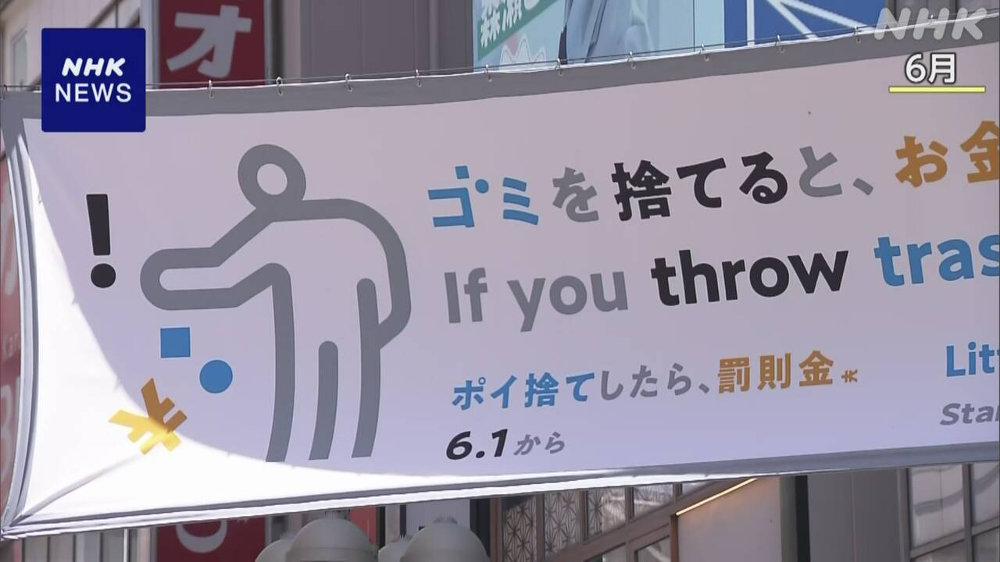

最新ニュース
1️⃣ 小学校の火事「先生がストーブを使って自分の服を干していた」
先月、東京の北区の小学校で火事がありました。子どもなど11人がけがをしました。
音楽室の隣の部屋から、火が出たと考えられています。
2日、北区と学校は、音楽の先生がこの部屋で電気ストーブを使って、自分の服を干していたと言いました。
この先生は、前から、学校の洗濯機で自分の服を洗濯して、この部屋で干していたようです。
北区は、学校で火事が起こらないようにするためにどうしたらいいか、専門家と話し合うと言っています。
2️⃣ 日本政府「外国人が在留資格を新しくするときの手数料を上げたい」
日本の政府は、外国人が日本に住むときに必要な「在留資格」の手数料を上げることを考えています。
政府は、新しい手数料の案を発表しました。
今は、入管に行って手続きをする場合、6000円です。
新しい手数料の案は、在留期間が3か月以下は、1万円です。1年は3万3000円、5年以上は7万5000円です。
日本にずっと住む「永住」は、今、1万円です。新しい案は、20万円です。
政府は、多くの人から意見を聞いて、今年10月1日から始めたいと考えています。
平口法務大臣は、日本に住む外国人が増えて、役所の仕事が増えているためだと話しています。
3️⃣ 渋谷区 道などにごみを捨ててお金を払ったのは324回

東京の渋谷区では、先月から、道などにごみを捨てたら、2000円払うルールができました。
役所の人などが、まちの中でごみを捨てる人がいないかどうか、24時間、見ています。
渋谷区によると、ごみを捨てた人がお金を払ったのは、1か月で、324回でした。 お金を払った人の半分以上は20歳から39歳の人でした。
ごみでいちばん多かったのは、たばこでした。ペットボトルや缶のごみもありました。
渋谷区は、このルールができて、ごみが少なくなったかどうか調べると話しています。
4️⃣ 村上春樹さんの新しい小説 たくさんの人が本屋に集まった
世界で有名な作家の村上春樹さんの新しい本が出ました。
「夏帆 The Tale of KAHO」という小説です。 夏帆という女性が、不思議な体験をする話です。
東京の新宿にある本屋は、3日午前0時から、この本を売り始めました。店には60人ぐらいが集まりました。
本を買った若い男性は「楽しみにしていました。早く家に帰って読みたいです」と話していました。
本屋の人は「たくさんの人が来て、驚きました。これからも多くの人に本屋に来てほしいです」と話していました。
- 〜がある / 〜がいる
- 〜など
- 〜ている / 〜でいる
- 〜から
- 〜ようだ / 〜みたいだ
- 〜ように
- 〜ようにする
- 〜ため(に)
- 〜ため
- 〜こと
- 〜以上
- 〜ず / 〜ずに
- 〜中
- 〜によると
- 〜という
- 〜くらい / 〜ぐらい
vebaev.github.io
Generated: 2026-07-03 11:33:22 UTC